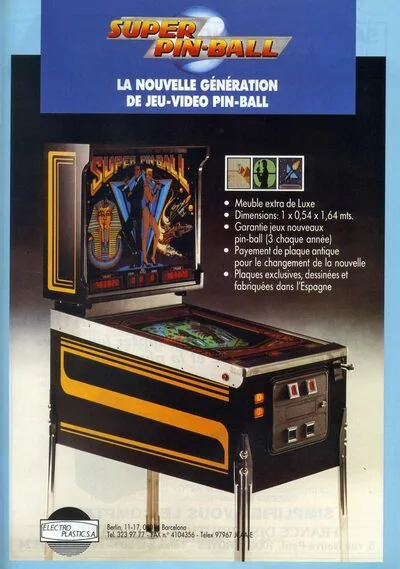

MAME (lr-mame2003)
Speed Ball
- Año: 1987
- Desarrollador: Tecfri / Desystem S.A.
- Género: Varios / Pinball
- Jugadores: 2 jugadores
- Probado el 4/11/2026
- A dos: por turnos ⚠️
Pinball de vídeo español de Tecfri (1987), con tres mesas, en la línea de Pinball Action. Su placa podía mostrar el marcador en displays digitales, como un pinball de verdad.
Controles
Juego tipo pinball. Usa 4 botones.
| Panel | Juego |
|---|---|
 | Mover los flippers (también B y A) · Coin lanza la bola · no hay tilt |
  | Empezar |
 | Meter una moneda |
+  | Salir del juego |
El panel en MAME (lr-mame2003)

🔎 Dudas para mirar jugando (1)
Datos de la guía que las fuentes no aclaran: si los compruebas en la bartop, apúntalo en las pruebas.
- ⚠️ La descripción antigua de la ficha seguía con un partido entre dos equipos (porterías, capitanes con resistencia, fuerza y habilidad, liga y eliminatoria, bola electrificada…).
Argumento
Recopilado de internet (2026-11-03). Lo marcado con ⚠️ no está probado en la bartop.
No tiene historia: un pinball de vídeo español, de Desystem SA / Tecfri (1987), con tres mesas, parecido a Pinball Action.
Final: no hay final; se juega por puntos.
Fuentes
descripción de la ficha (ScreenScraper)
Jugabilidad
Recopilado de internet (2026-11-03). Lo marcado con ⚠️ no está probado en la bartop.
- Tipo de juego: pinball de vídeo de Tecfri (1987).
- Placa curiosa: podía funcionar en un mueble normal o mostrar el marcador en displays digitales, como un pinball de verdad (MAME emula los dos).
- Mueble híbrido: según varios folletos, para Speed Ball y Music Ball se diseñó un mueble a medio camino entre pinball y máquina de vídeo, fabricado a nombre de Electro Plastic SA (con la misma dirección de Barcelona que Tecfri).
- ⚠️ La descripción antigua de la ficha seguía con un partido entre dos equipos (porterías, capitanes con resistencia, fuerza y habilidad, liga y eliminatoria, bola electrificada…). Eso es el Speedball de The Bitmap Brothers (1988), otro juego: no corresponde a esta recreativa.
Fuentes
descripción de la ficha (ScreenScraper)
Guía de niveles
Recopilado de internet (2026-11-03). Lo marcado con ⚠️ no está probado en la bartop.
Tres mesas. ⚠️ No he encontrado más detalles.
Fuentes
descripción de la ficha (ScreenScraper)
Objetos
Recopilado de internet (2026-11-03). Lo marcado con ⚠️ no está probado en la bartop.
No hay objetos.
Fuentes
descripción de la ficha (ScreenScraper)
Trucos y secretos
Recopilado de internet (2026-11-03). Lo marcado con ⚠️ no está probado en la bartop.
Secretos
⚠️ No he encontrado secretos o trucos de la recreativa en las fuentes consultadas.
Fuentes
descripción de la ficha (ScreenScraper)
Longplay

Partida completa de la recreativa (5 min), de RetroGamingLoft: Speed Ball Longplay (Arcade Game).